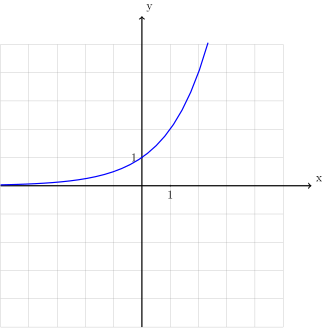
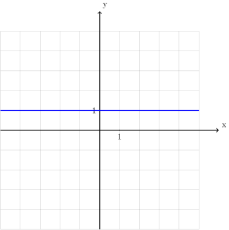
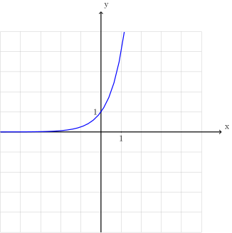
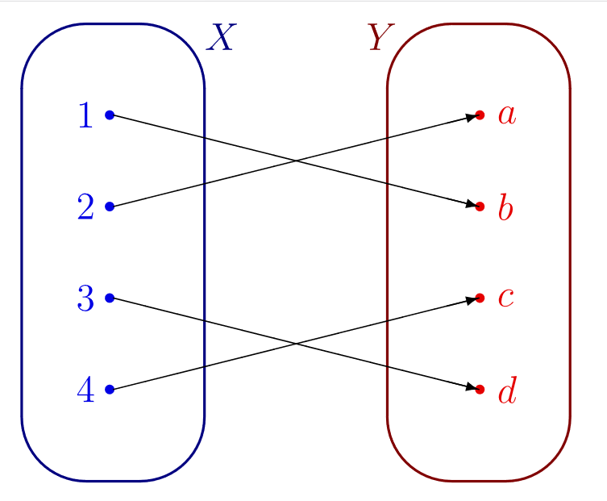
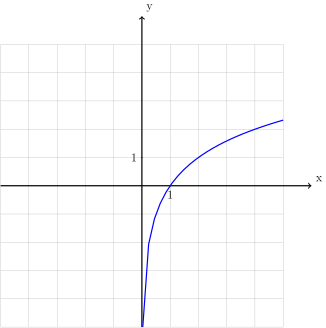
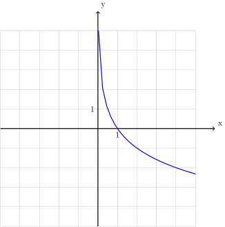
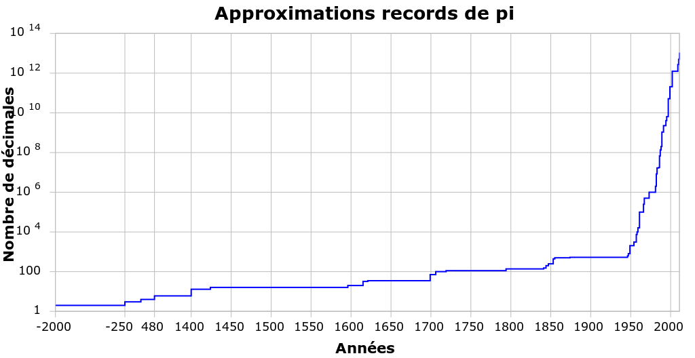

Puissances/exposants naturels, entiers et rationnels
Fonctions
Limites et continuité de fonctions
Dérivées
Intégrales
1 Introduction¶
1.1 Des exposants irrationnels ?¶
\[2^{\pi}\]A priori, non. Non seulement \(\pi\) n’est pas un nombre rationnel, mais on voit mal comment on pourrait étendre le sens donné aux exposants (initialement) pour un exposant tel que \(\pi\) :
\[2^{\pi}=\underbrace{2.2.2.?}_{\text{$\pi$ fois ?}}\]Pourtant, si on entre \(2^{\pi}\) dans une calculatrice, elle retourne une approximation de ce nombre :
\[2^{\pi} \simeq 8,82\]Il doit donc sans doute être possible d’accorder à cette notation un sens univoque et de calculer ce nombre (ou au moins une approximation de ce nombre).
1.2 Des équations irrésolubles ?¶
\[2^x=7\]Si un tel nombre \(x \in \mathbb{R}\) existe (ce qui n’est a priori même pas certain), il s’agit sans doute d’un nombre entre \(2\) et \(3\) (puisque \(2^2=4\) et \(2^3=8\)) et sans doute un peu plus proche de \(3\) que de \(2\). Mais cela ne nous avance pas beaucoup…
1.3 Une primitive de la fonction inverse ?¶
1.4 Une fonction qui est sa propre dérivée/primitive ?¶
1.5 Des échelles logarithmiques ?¶
2 Fonctions exponentielles¶
2.1 Définition¶
\[\begin{split}\begin{aligned} f : \mathbb{Q}\to& \mathbb{R}\\ x \mapsto& 2^x\end{aligned}\end{split}\]Dont le graphe est une succession de points non continue :
![\draw[step=1cm,gray,very thin] (-5,-5) grid (5,5);
\draw[very thick,->] (-5,0) -- (6,0) node[anchor=south west] {x};
\draw[very thick,->] (0,-5) -- (0,6) node[anchor=south west] {y};
\foreach \x in {1}
\draw (\x cm,1pt) -- (\x cm,-1pt) node[anchor=north] {$\x$};
\foreach \y in {1}
\draw (1pt,\y cm) -- (-1pt,\y cm) node[anchor=east] {$\y$};
\foreach \x in {-200,...,-150} \draw[thick,blue] (0.025*\x,2^0.025^\x)node{.};
\foreach \x in {-150,...,-100} \draw[thick,blue] (0.025*\x,2^0.025^\x)node{.};
\foreach \x in {-100,...,-50} \draw[thick,blue] (0.025*\x,2^0.025^\x)node{.};
\foreach \x in {-50,...,0} \draw[thick,blue] (0.025*\x,2^0.025^\x)node{.};
\foreach \x in {0,...,100} \draw[thick,blue] (0.0125*\x,2^0.0125^\x)node{.};
\foreach \x in {100,...,186} \draw[thick,blue] (0.0125*\x,2^0.0125^\x)node{.};](_images/tikz-17bc5686dba63a078b56fd39d45275976b3081b5.svg)
Nous aimerions étendre cette fonction sur \(\mathbb{R}\). Mais pas de n’importe quelle manière. Un prolongement tel que la fonction :
dont le graphe ressemble à :
![\draw[step=1cm,gray,very thin] (-5,-5) grid (5,5);
\draw[very thick,->] (-5,0) -- (6,0) node[anchor=south west] {x};
\draw[very thick,->] (0,-5) -- (0,6) node[anchor=south west] {y};
\foreach \x in {1}
\draw (\x cm,1pt) -- (\x cm,-1pt) node[anchor=north] {$\x$};
\foreach \y in {1}
\draw (1pt,\y cm) -- (-1pt,\y cm) node[anchor=east] {$\y$};
\draw[very thick,blue] plot[domain=-5:5](\x,{0*\x});
\foreach \x in {-200,...,-150} \draw[thick,blue] (0.025*\x,2^0.025^\x)node{.};
\foreach \x in {-150,...,-100} \draw[thick,blue] (0.025*\x,2^0.025^\x)node{.};
\foreach \x in {-100,...,-50} \draw[thick,blue] (0.025*\x,2^0.025^\x)node{.};
\foreach \x in {-50,...,0} \draw[thick,blue] (0.025*\x,2^0.025^\x)node{.};
\foreach \x in {0,...,100} \draw[thick,blue] (0.0125*\x,2^0.0125^\x)node{.};
\foreach \x in {100,...,186} \draw[thick,blue] (0.0125*\x,2^0.0125^\x)node{.};](_images/tikz-84378fab73d82c4942e14581175cbb3a5a336f97.svg)
Théorème 2.1.1 (Théorème de prologement par densité).
Soit \(f : \mathbb{Q}\to \mathbb{R}\) une fonction qui est Cauchy-continue.
Alors il existe une unique fonction \(g : \mathbb{R}\to \mathbb{R}\) qui est un prolongement continu de \(f\) sur \(\mathbb{R}\).
\[\begin{split}\begin{aligned} f_a : \mathbb{Q}\to& \mathbb{R}\\ x \mapsto& a^x\end{aligned}\end{split}\]est Cauchy-continue, ce qui implique que le théorème de prolongement par densité garantit l’existence d’un unique prolongement continu \(g_a : \mathbb{R}\to \mathbb{R}\) de \(f_a\) sur \(\mathbb{R}\).
Définition 2.1.2. Soit \(a \in {{\mathbb{R}}_{0}}^{+}\).
La fonction exponentielle de base \(a\), notée \({\exp}_a : \mathbb{R}\to \mathbb{R}\), est l’unique prolongement continu sur \(\mathbb{R}\) de la fonction :
\[\begin{split}\begin{aligned} f_a : \mathbb{Q}\to& \mathbb{R}\\ x \mapsto& a^x\end{aligned}\end{split}\]
Remarque 2.1.3. Par continuité, le graphe de la fonction \({\exp}_2 : \mathbb{R}\to \mathbb{R}\) ressemble par exemple à :

Cette fois-ci, comme la fonction \({\exp}_2 : \mathbb{R}\to \mathbb{R}\) est bien définie sur tout \(\mathbb{R}\) et pas seulement sur \(\mathbb{Q}\), le graphe de la fonction est bien un tracé continu.
Remarque 2.1.4. Pour tout \(a \in {{\mathbb{R}}_{0}}^{+}\), nous sommes déjà capables d’évaluer les fonctions \({\exp}_a\) en tout nombre rationnel. En effet, puisque les fonctions \({\exp}_a\) sont les prolongements continus des fonctions exponentielles sur \(\mathbb{Q}\), si \(x \in \mathbb{Q}\), le nombre \({\exp}_a (x)\) est tout simplement \(a^x\) au sens des exposants rationnels. En particulier, pour tout \(a \in {{\mathbb{R}}_{0}}^{+}\), le nombre \({\exp}_a (0)\) est \(a^0\) c’est-à-dire \(1\) et le nombre \({\exp}_a (1)\) est \(a^1\) c’est-à-dire \(a\). Géométriquement, cela correspond au fait que le graphe de toute fonction exponentielle \({\exp}_a\) passe par les point \((0;1)\) et \((1;a)\).
Notation. Même si elle est au moins dans un premier temps un peu abusive, la notation suivante est utilisée pour désigner les images des fonctions \({\exp}_a\) pour \(a \in {{\mathbb{R}}_{0}}^{+}\) :
Pour tout \(x \in \mathbb{R}\) (même quand \(x\) n’est pas un nombre rationnel), on note :
Comme les fonctions exponentielles \({\exp}_a\) sont les prolongements continus des fonctions exponentielles sur \(\mathbb{Q}\), il n’est pas étonnant que l’on reprend la notation des expressions formelles de ces fonctions. Nous verrons que cet abus de notation prend tout son sens en étudiant les propriétés des fonctions exponentielles \({\exp}_a\) dans la prochaine section.
Remarque 2.1.4. Le sens d’une notation telle que \(2^{\pi}\) ne vous est donc plus inconnu. Il s’agit tout simplement de \({\exp}_2 (\pi)\). Malheureusement, le théorème de prolongement par densité ne nous dit absolument pas comment calculer cette quantité. Sans la démonstration de ce théorème, nous ne pouvons même pas estimer ce nombre et cette nouvelle connaissance du sens de la notation \(2^{\pi}\) est honnêtement assez insatisfaisante. Malheureusement, nous ne pourrons pas remédier à cela dans ce cours.
2.2 Propriétés élémentaires¶
Listons à présent les propriétés élémentaires de nos nouvelles fonctions de référence : les fonctions exponentielles. Toutes ces propriétés découlent directement du fait que les fonctions exponentielles sont définis comme prolongements continus des fonctions exponentielles sur \(\mathbb{Q}\). Malheureusement, nous n’en démontrerons aucune dans le cadre de ce cours.
Proposition 2.2.1. Soit \(a \in {\mathbb{R}}_{0}^{+}\). Le domaine de définition de la fonction \({\exp}_a\) est \(\mathbb{R}\).
Proposition 2.2.2. Soit \(a \in {\mathbb{R}}_{0}^{+}\).
Si \(a=1\), l’image de la fonction \({\exp}_a\) est \(\{1\}\).
Si \(a \neq 1\), l’image de la fonction \({\exp}_a\) est \({\mathbb{R}}_{0}^{+}\).
Proposition 2.2.3. Soit \(a \in {\mathbb{R}}_{0}^{+}\).
Si \(a<1\), la fonction \({\exp}_a\) est strictement décroissante.
Si \(a = 1\), la fonction \({\exp}_a\) est constante.
Si \(a<1\), la fonction \({\exp}_a\) est strictement croissante.
Exemple 2.2.4. Par exemple, si \(a=\frac{1}{3}\), la fonction \({\exp}_{\frac{1}{4}}\) est strictement décroissante :
Si \(a=1\), la fonction \({\exp}_{1}\) est constante :

Si \(a=4\), la fonction \({\exp}_{4}\) est strictement croissante :

Remarque 2.2.5. Le “type de croissance” des fonctions exponentielles est différent de tous ceux des autres fonctions que vous connaissez. Par exemple, si \(a > 1\), la fonction \({\exp}_{a}\) est strictement croissante et cette croissance est de plus en plus forte au fur et à mesure que \(x \in \mathbb{R}\) augmente. Pour passer de \({\exp}_{a}(x)\) à \({\exp}_{a}(x+1)\), on multiplie toujours par \(a\), ce qui donne une croissance explosive de plus en plus rapide qui finira toujours par dépasser celle de n’importe quelle fonction polynomiale. On appelle ce type de croissance une croissance exponentielle (je vous laisse deviner pourquoi).
Puisque les fonctions exponentielles sont définies comme les prolongements continus des fonctions exponentielles sur \(\mathbb{Q}\), on peut être certain qu’elles sont… continues :
Proposition 2.2.6. Soit \(a \in {\mathbb{R}}_{0}^{+}\). La fonction \({\exp}_a\) est continue.
La limite en un point \(c \in \mathbb{R}\) d’une fonction exponentielle est donc toujours égale à son image en ce point. Par ailleurs, on a :
Proposition 2.2.7. Soit \(a \in {\mathbb{R}}_{0}^{+}\).
Si \(a<1\), on a \(\lim\limits_{x \to -\infty} {\exp}_a(x) = +\infty\) et \(\lim\limits_{x \to +\infty} {\exp}_a(x) = 0\).
Si \(a = 1\), on a \(\lim\limits_{x \to -\infty} {\exp}_a(x) = 1\) et \(\lim\limits_{x \to +\infty} {\exp}_a(x) = 1\).
Si \(a>1\), on a \(\lim\limits_{x \to -\infty} {\exp}_a(x) = 0\) et \(\lim\limits_{x \to +\infty} {\exp}_a(x) = +\infty\).
Vient à présent un des résultats les plus importants au sujet des fonctions exponentielles. Celui-ci correspond à la bonne nouvelle selon laquelle notre définition des fonctions exponentielles comme prolongements continus des fonctions exponentielles sur \(\mathbb{Q}\) permet de démontrer que les règles de calcul des exposants que nous avions pour les exposants rationnels fonctionnent également pour tous les exposants réels (même ceux qui ne sont pas rationnels). C’est également cette proposition qui permet de justifier la notation quelque peu abusive utilisée pour dénoter les images des fonctions exponentielles.
Proposition 2.2.8. Soient \(a,b \in {\mathbb{R}}_{0}^{+}\).
Pour tout \(x,y \in \mathbb{R}\), on a :
\[{\exp}_a(x+y)={\exp}_a(x) . {\exp}_a(y)\]\[a^{x+y} = a^x . a^y\]Pour tout \(x \in \mathbb{R}\), on a :
\[{\exp}_{ab}(x) = {\exp}_a(x) . {\exp}_b(x)\]\[(a.b)^x = a^x.b^x\]Pour tout \(x \in \mathbb{R}\), on a :
\[{\exp}_{{\exp}_a(x)}(y) = {\exp}_a(x.y)\]\[(a^x)^y = a^{x.y}\]Pour tout \(x,y \in \mathbb{R}\), on a :
\[{\exp}_a(x-y) = \frac{{\exp}_a(x)}{{\exp}_a(y)}\]\[a^{x-y} = \frac{a^{x}}{a^{y}}\]Pour tout \(x \in \mathbb{R}\), on a :
\[{\exp}_{\frac{a}{b}}(x) = \frac{{\exp}_a(x)}{{\exp}_b(x)}\]\[{\left(\frac{a}{b}\right)}^x = \frac{a^{x}}{b^{x}}\]
Avec cette dernière proposition, la notation pour les images des fonctions exponentielles prend tout son sens. En effet, on sait à présent qu’en plus de coincider avec les fonctions exponentielles sur \(\mathbb{Q}\), les fonctions exponentielles \({\exp}_a\) (pour \(a \in {\mathbb{R}}_{0}^{+}\)) possèdent les mêmes propriétés calculatoires que ces fonctions exponentielles sur \(\mathbb{Q}\). En fait, ce sont ces propriétés qui sont fondamentales et qui caractérisent principalement les fonctions exponentielles, en particulier la première : les fonctions exponentielles sont des fonctions définies sur \(\mathbb{R}\) qui transforment des sommes en produits !
2.3 La fonction exponentielle \(\exp\) et le nombre \(e\)¶
\[\lim\limits_{x \to 0} \frac{{\exp}_a(x)-{\exp}_a(0)}{x-0}\]\[\lim\limits_{x \to 0} \frac{a^x-a^0}{x}\]\[\lim\limits_{x \to 0} \frac{a^x-1}{x}\]Si cette limite existe, alors par linéarité des limites, pour tout \(c \in \mathbb{R}\), les limites suivantes existent également :
\[a^c \lim\limits_{x \to 0} \frac{a^x-1}{x}\]\[\lim\limits_{x \to 0} a^c.\frac{a^x-1}{x}\]\[\lim\limits_{x \to 0} \frac{a^{x+c}-a^c}{x}\]\[\lim\limits_{x \to c} \frac{a^{(x-c)+c}-a^c}{(x-c)}\]\[\lim\limits_{x \to c} \frac{a^{x}-a^c}{x-c}\]\[\lim\limits_{x \to c} \frac{{\exp}_a(x)-{\exp}_a(c)}{x-c}\]Et donc la fonction \({\exp}_a\) est aussi dérivable en tout \(c \in \mathbb{R}\). De plus, on remarque que si la fonction \({\exp}_a\) est dérivable en \(0\), alors pour tout \(c \in \mathbb{R}\) on a :
\[({\exp}_a)'(c) = {\exp}_a (c) . ({\exp}_a)' (0)\]Si les fonctions \({\exp}_a\) sont dérivables, alors pour tout \(a \in {\mathbb{R}}_{0}^{+}\backslash \{1\}\) la dérivée de \({\exp}_a\) est elle-même fois une constante et cette constante est le nombre dérivée de \({\exp}_a\) en \(0\).
\[\lim\limits_{x \to 0} \frac{{\textbf{a}}^x-1}{x} = 1\]La fonction \({\exp}_{\textbf{a}} : \mathbb{R}\to \mathbb{R}\) sera une fonction qui est dérivable et qui est égale à sa propre dérivée ! Un tel nombre existe-t-il ? Oui : c’est le nombre dénoté habituellement par la lettre \(e\).
Théorème 2.3.1. (Théorème du nombre e)
Il existe un unique nombre \(\textbf{a} \in {\mathbb{R}}_{0}^{+}\backslash \{1\}\) tel que :
\[\lim\limits_{x \to 0} \frac{{\textbf{a}}^x-1}{x} = 1\]Ce nombre est noté \(e\) et vaut approximativement :
\[e \simeq 2.71828182846\]
Définition 2.3.2. La fonction exponentielle (naturelle) est la fonction \({\exp}_{e} : \mathbb{R}\to \mathbb{R}\) et elle est généralement notée \(\exp : \mathbb{R}\to \mathbb{R}\).
Étant donné l’existence (et l’unicité) du nombre \(e\), nous pouvons démontrer que la fonction exponentielle (de base \(e\)) est dérivable et égale à sa propre dérivée.
Proposition 2.3.3. La fonction exponentielle de base \(e\) est dérivable et sa dérivée est égale à elle-même.
Soit \(c \in \mathbb{R}\) quelconque. Montrons que la fonction \(\exp : \mathbb{R}\to \mathbb{R}\) est dérivable en \(c\) et que le nombre dérivée de \(\exp\) en \(c\) vaut \(\exp(c)\). Il faut donc montrer que :
Or, par le théorème du nombre \(e\), on sait que :
On a donc :
Par linéarité des limites, on a :
Remarque 2.3.4. C’est cette dernière proposition qui rend le nombre \(e\) aussi incroyable : il s’agit de l’unique nombre réel strictement positif tel que l’exponentielle ayant pour base ce nombre est dérivable et égale à sa dérivée. Cette propriété du nombre \(e\) fait qu’il possède un statut aussi important dans les mathématiques qu’une autre constante remarquable que vous connaissez bien : \(\pi\).
Remarque 2.3.5. La fonction exponentielle est une fonction extrêmement importante en analyse mathématique, en particulier dans la théorie des équations différentielles. Une équation différentielle est une équation dont la ou les inconnues ne sont pas des nombres mais des fonctions dérivables. L’exponentielle est l’unique solution qui vaut \(1\) en \(0\) à ce qui est peut-être la plus simple des équations différentielles intéressantes : .. math:: f=f’ Effectivement, l’exponentielle est bien une fonction égale à sa propre dérivée. Les équations différentielles sont extrêmement importantes en sciences. La formalisation de la plupart des phénomènes naturels passe par des équations différentielles.
Bien, nous avons donc montré que l’exponentielle de base \(e\) est dérivable et nous nous sommes rendus compte qu’il s’agissait d’une fonction dérivable égale à sa propre dérivée. Qu’en est-il des autres fonctions exponentielles ? Pour le savoir, nous allons d’abord devoir parler des logarithmes qui sont les fonctions réciproques des fonctions exponentielles. Néanmoins, chaque chose en son temps : entraînons-nous d’abord à manipuler nos nouvelles fonctions de référence, les fonctions exponentielles.
2.4 Exercices¶
Exercice 2.4.1. En utilisant les propriétés élémentaires des fonctions exponentielles, calculer les nombres suivants sans avoir recours à une calculatrice.
|
|
Solution.
|
|
Exercice 2.4.2. Donner les domaines de définition réels maximaux pour les fonctions dont les expressions sont les suivantes :
|
|
Solution.
|
|
Exercice 2.4.3. En utilisant les règles de transformations des graphes et les propriétés des fonctions exponentielles, tracer les graphes des fonctions suivantes.
|
|
Solution.
|
|
Exercice 2.4.4 Pour les fonctions suivantes, déterminer si elles convergent ou divergent pour \(x \to -\infty\) et \(x \to +\infty\).
|
|
Solution.
Exercice 2.4.5. Calculer les dérivées des fonctions dérivables suivantes.
|
|
|
|
Exercice 2.4.6. Donner l’équation cartésienne de la tangente au graphe de la fonction \(f\) donnée ci-dessous au point d’abscisse \(1\).
Solution. \(y = -\frac{1}{e}x +\frac{3}{e}\)
Exercice 2.4.7. La fonction suivante est-elle strictement décroissante ?
Solution Oui. Sa dérivée est strictement négative, donc \(f\) est strictement décroissante.
Exercice 2.4.8. Démontrer que la fonction exponentielle est deux fois dérivable. Ensuite, montrer qu’elle est convexe.
Solution Puisque la fonction exponentielle est dérivable et que sa dérivée est égale à la fonction exponentielle, sa dérivée est dérivable et la fonction exponentielle est donc deux fois dérivable. Puisque la dérivée de la fonction exponentielle a comme dérivée la fonction exponentielle, qui est strictement positive, la fonction exponentielle est convexe.
Exercice 2.4.9. La fonction suivante possède-t-elle un maximum ? Si oui, quel est-il et quel est le point de maximum associé ?
Solution Oui. La maximum est \(\frac{4e}{9}\simeq 1,2081\) et le point de maximum est \(\frac{1}{3}\).
Exercice 2.4.10. Donner une primitive de la fonction exponentielle.
Solution. La fonction exponentielle.
Exercice 2.4.11. Calculer les intégrales des fonctions intégrables suivantes.
|
|
|
|
3 Fonctions réciproques¶
Dans cette section, nous allons découvrir les notions et les résultats qui nous permettront de définir les fonctions logarithmes.
3.1 Bijections¶
Dans un premier temps, intéressons-nous aux fonctions injectives. Grossièrement, les fonctions injectives sont les fonctions qui ne donnent jamais deux fois le même résulat .
Définition 3.1.1. Soit \(f : \mathop{\mathrm{dom}}(f) \to \mathbb{R}\) une fonction réelle. On dit que \(f\) est injective si pour tout \(x_1,x_2 \in \mathop{\mathrm{dom}}(f)\), si \(f(x_1)=f(x_2)\), alors \(x_1=x_2\).
Remarque 3.1.2. Géométriquement, dire qu’une fonction réelle \(f : \mathop{\mathrm{dom}}(f) \to \mathbb{R}\) est injective revient à dire que son graphe a toujours au plus une intersection avec n’importe quelle droite horizontale.
Exemple 3.1.3. La fonction cubique est injective. En effet, si on a deux nombres \(x,y \in \mathbb{R}\) tels que \(x^3=y^3\), cela implique que \(x=y\). Ils n’existent pas deux nombres différents qui ont le même cube.
Contre-exemple 3.1.4. La fonction carrée n’est pas injective. En effet, si on a deux nombres \(x,y \in \mathbb{R}\) tels que \(x^2=y^2\), cela n’implique pas nécessairement que \(x=y\). Par exemple, si \(x=2\) et \(y=-2\), on a \(2^2=(-2)^2\) sans avoir \(2=-2\).
Donnons à présent la définition de fonction surjective (sur un ensemble). Intuitivement, dire qu’une fonction est surjective sur un ensemble revient à dire que cette fonction parvient à atteindre tous les éléments de cet ensemble.
Définition 3.1.5. Soit \(f : \mathop{\mathrm{dom}}(f) \to \mathbb{R}\) une fonction réelle. Soit \(A \subseteq \mathbb{R}\). On dit que \(f\) est surjective (sur \(A\)) si pour tout \(y \in A\), il existe au moins un \(x \in \mathop{\mathrm{dom}}(f)\) tel que \(f(x)=y\).
Remarque 3.1.6. Par définition de l’image d’une fonction, toute fonction est surjective sur son image.
Exemple 3.1.7. La fonction cubique est surjective sur \(\mathbb{R}\). En effet, si on prend \(y \in \mathbb{R}\), on peut trouver un \(x\) dans le domaine de la fonction cubique (c’est-à-dire \(\mathbb{R}\)) tel que \(x^3=y\) : il suffit de prendre \(x=\sqrt[3]{y}\).
Contre-exemple 3.1.8. La fonction carrée n’est pas surjective sur \(\mathbb{R}\). En effet, si on prend \(y \in \mathbb{R}\), on ne peut pas nécessairement trouver un \(x\) dans le domaine de la fonction cubique (c’est-à-dire \(\mathbb{R}\)) tel que \(x^2=y\) : si par exemple \(y=-4\), il est impossible de trouver un nombre réel dont le carré vaut \(-4\). Par contre, la fonction carrée est bien surjective sur son image, c’est-à-dire \({\mathbb{R}}^{+}\).
En combiant les notions de fonctions injectives et bijectives, on obtient la notion de bijection.
Définition 3.1.9. Soit \(f : \mathop{\mathrm{dom}}(f) \to \mathbb{R}\) une fonction réelle. Soit \(A \subseteq \mathbb{R}\). On dit que \(f\) est une bijective (sur \(A\)) si elle est injective et qu’elle est surjective (sur \(A\)). On dit alors que \(f\) est une bijection (sur \(A\)).
Remarque 3.1.10. Une bijection est une fonction qui associe à tout élément de l’ensemble de départ un unique élément de l’ensemble d’arrivée (comme toute fonction) mais qui réalise également l’inverse : à tout élément de l’ensemble d’arrivée correspond un unique élément de l’ensemble de départ. Une bijection correspond intuitivement à relier chaque élément d’un ensemble avec un élément d’un autre ensemble de sorte que tout élément d’un des deux ensembles ait un unique compagnon dans l’autre ensemble.

Un exemple graphique de bijection.
Exemple 3.1.11. La fonction cubique est une bijection sur \(\mathbb{R}\).
Contre-exemple 3.1.12. La fonction carrée n’est pas une bijection sur \(\mathbb{R}\) car elle n’est pas surjective sur \(\mathbb{R}\), mais elle n’est même pas une bijection sur son image, c’est-à-dire \({\mathbb{R}}^{+}\), car elle n’est pas injective.
3.2 Fonctions réciproques¶
Nous pouvons à présent donner la notion qui nous permettra de définir les fonctions logarithmes : celle de fonction réciproque.
Définition 3.2.1. Soit \(f : \mathop{\mathrm{dom}}(f) \to \mathbb{R}\) une fonction réelle. Une (fonction) réciproque de la fonction \(f\) est une fonction \(g : \mathop{\mathrm{dom}}(g) \to \mathbb{R}\) telle que \(\mathop{\mathrm{dom}}(g) = \mathop{\mathrm{im}}(f)\) et telle que :
Pour tout \(x \in \mathop{\mathrm{dom}}(f)\) :
\[(g \circ f) (x) = g(f(x)) = x\]Pour tout \(y \in \mathop{\mathrm{dom}}(g)\) :
\[(f \circ g) (y) = f(g(y)) = y\]
Exemple 3.2.2. La fonction cubique possède une fonction réciproque : la fonction racine cubique. En effet, les domaines de définition et les images de ces deux fonctions sont tous égaux à \(\mathbb{R}\) et on a :
Pour tout \(x \in \mathbb{R}\) :
Pour tout \(y \in \mathbb{R}\) :
Remarque 3.2.3. D’un point de vue géométrique, trouver une réciproque d’une fonction réelle (qui en possède une) revient à échanger les rôles des abscisses et des ordonnées dans le graphe de la fonction. Autrement dit, le graphe d’une fonction réciproque est toujours le symétrique du graphe de la fonction réelle initiale par la droite d’équation cartésienne \(y=x\) (symétrie orthogonale).
Viennent à présent deux résultats que nous ne pourrons tristement pas démontrer dans ce cours (même si leurs démonstrations ne sont pas difficiles) qui permettent de garantir l’existence d’une réciproque d’une fonction donnée à condition que celle-ci soit une bijection, ainsi que son unicité.
Proposition 3.2.4. Soit \(f : \mathop{\mathrm{dom}}(f) \to \mathbb{R}\) une fonction réelle. Alors il existe une réciproque à \(f\) si et seulement si \(f\) est une bijection sur son image.
Proposition 3.2.5. Soit \(f : \mathop{\mathrm{dom}}(f) \to \mathbb{R}\) une fonction réelle. Si \(f\) a une réciproque, alors cette réciproque est unique.
Remarque 3.2.6. Étant donné la dernière proposition, on peut parler de LA réciproque d’une fonction réelle \(f : \mathop{\mathrm{dom}}(f) \to \mathbb{R}\) sans équivoque. En général, on note cette fonction réciproque \(f^{-1}\), mais nous éviterons d’utiliser cette notation dans ce cours afin d’éviter la confusion avec la notation des exposants.
Il suffit donc qu’une fonction soit une bijection pour qu’elle possède une réciproque. On peut se demander si cette réciproque hérite alors de certaines des propriétés de la fonction de départ. La réponse est donnée par le théorème suivant, que nous ne pourrons pas démontrer dans ce cours.
Définition 3.2.7. (Théorème de la bijection)
Soit \(I\) un intervalle et soit \(f : I \to \mathbb{R}\) une fonction réelle.
Si \(f\) est strictement monotone (c’est-à-dire strictement croissante ou strictement décroissante) et continue, alors \(f\) est une bijection sur son image et sa fonction réciproque est nécessairement continue. De plus, si \(f\) est dérivable et que sa dérivée ne s’annule jamais, alors sa fonction réciproque est aussi dérivable.
Ce théorème est la clé qui va nous permettre de définir les fonctions logarithmes. En effet, comme pour tout \(a \in {\mathbb{R}}_{0}^{+}\backslash \{1\}\), la fonction \({\exp}_a : \mathbb{R}\to \mathbb{R}\) est une fonction strictement monotone et continue de \(\mathbb{R}\) dans \({\mathbb{R}}_{0}^{+}\), le théorème de la bijection et les propositions 3.2.4 et 3.2.5 nous assurent qu’il existe une unique fonction réciproque à la fonction \({\exp}_a\). Cette réciproque porte un nom : le logarithme en base \(a\).
Exercice 3.2.8. Le fait que pour \(a \in {\mathbb{R}}_{0}^{+}\backslash \{1\}\), la fonction \({\exp}_a : \mathbb{R}\to \mathbb{R}\) soit une bijection et donc est injective est très utile pour résoudre des équations qui font intervenir des fonctions exponentielles. En effet, de manière générale, si on a une équation de la forme suivante.
Par injectivité, il suffit alors de résoudre l’équation :
Avant de définir les fonctions logarithmes, familiarisons-nous un peu avec les nouvelles notions de cette section et entraînons-nous à résoudre des équations qui font intervenir des fonctions exponentielles en utilisant l’injectivité de ces fonctions.
3.3 Exercices¶
Exercice 3.3.1. La fonction inverse est-elle injective ? Si oui, sur quel ensemble est-elle surjective ? Si elle en possède une, quelle est sa fonction réciproque ?
Solution. Oui, elle est injective. Elle est surjective sur \({\mathbb{R}}_{0}\). Sa fonction réciproque est elle-même.
Exercice 3.3.2. Démontrer que la composée de deux fonctions injectives définies sur \(\mathbb{R}\) est aussi une fonction injective.
Solution. Soient \(f : \mathbb{R}\to \mathbb{R}\) et \(g : \mathbb{R}\to \mathbb{R}\) deux fonctions injectives. Montrons que la fonction \(f \circ g : \mathbb{R}\to \mathbb{R}\) est aussi injective. Soient \(x,y \in \mathbb{R}\). Supposons que \(f(g(x)) = f(g(y))\). Comme \(f\) est injective, cela implique que \(g(x) = g(y)\). Comme \(g\) est injective, cela implique que \(x=y\). Donc la fonction \(f \circ g\) est injective.
Exercice 3.3.3. Les fonctions suivantes sont des bijections de \(\mathbb{R}\) dans \(\mathbb{R}\). Pour chacune d’entre elles, trouver la fonction réciproque.
|
|
Solution.
|
|
Exercice 3.3.4. En utilisant l’injectivité des fonctions exponentielles, résoudre les équations suivantes dans \(\mathbb{R}\).
|
|
Solution
|
|
Remarque 3.3.5. Il n’y a pas d’inéquation avec des fonctions exponentielles au programme du cours de mathématiques de 4 heures par semaine. Néanmoins, il est possible que vous ayez à résoudre une telle inéquation ultérieurement, par exemple dans un cours de physique. Si vous souhaitez vous entraîner, prenez les équations de l’exercice 3.3.4 et remplacez les égalités par des inégalités.
4 Fonctions logarithmes¶
4.1 Définition¶
Comme les fonctions \({\exp}_a : \mathbb{R}\to \mathbb{R}\) sont des fonctions strictement monotones et continues de \(\mathbb{R}\) dans \({\mathbb{R}}_{0}^{+}\) pour tout \(a \in {\mathbb{R}}_{0}^{+}\backslash \{1\}\), le théorème de la bijection (théorème 3.2.7) et les propositions 3.2.4et 3.2.5 nous assurent qu’il existe une unique fonction réciproque définie sur \({\mathbb{R}}_{0}^{+}\) à chacune de ces fonctions :
Définition 4.1.1 Soit \(a \in {\mathbb{R}}_{0}^{+}\backslash \{1\}\). La fonction logarithme de base \(a\), notée \({\log}_{a}\), est la fonction réciproque de la fonction exponentielle de base \(a\).
Remarque 4.1.2 Pour \(a \in {\mathbb{R}}_{0}^{+}\backslash \{1\}\), la fonction exponentielle de base \(a\) a comme domaine \(\mathbb{R}\) et comme image \({\mathbb{R}}_{0}^{+}\). La fonction logarithme de base \(a\) a donc comme domaine \({\mathbb{R}}_{0}^{+}\) et comme image \(\mathbb{R}\).
Remarque 4.1.3 Pour \(a \in {\mathbb{R}}_{0}^{+}\backslash \{1\}\), par définition de la fonction logarithme de base \(a\) comme réciproque de la fonction exponentielle de base \(a\), on a :
Pour tout \(x \in \mathbb{R}\) :
\[{\log}_{a}(a^x) = x\]Pour tout \(y \in {\mathbb{R}}_{0}^{+}\) :
\[a^{{\log}_{a}(y)}= y\]
Ces simples égalités, qui caractérisent les fonctions logarithmes, sont très utiles lorsqu’on souhaite par exemple utiliser des fonctions logarithmes pour résoudre des équations.
Exemple 4.1.4 Intéressons-nous un instant à la fonction \({\log}_2 : {\mathbb{R}}_{0}^{+}\to \mathbb{R}\) pour bien comprendre ce que sont les fonctions logarithmes.
Que vaut par exemple \({\log}_2 (1)\) ? Puisque la fonction \({\log}_2\) est la réciproque de la fonction \({\exp}_2\), le nombre \({\log}_2 (1)\) est le nombre réel \(x \in \mathbb{R}\) tel que \({\exp}_2 (x) = 2^x = 1\). Nous connaissons ce nombre, il s’agit de \(0\) car \(2^0=1\) ! En conclusion : \({\log}_2 (1)=0\). Autre exemple : que vaut par exemple \({\log}_2 (2)\) ? Puisque la fonction \({\log}_2\) est la réciproque de la fonction \({\exp}_2\), le nombre \({\log}_2 (2)\) est le nombre réel \(x \in \mathbb{R}\) tel que \({\exp}_2 (x) = 2^x = 2\). Nous connaissons ce nombre, il s’agit de \(1\) car \(2^1=2\) ! En conclusion : \({\log}_2 (2)=1\).
Un dernier exemple : que vaut par exemple \({\log}_2 (8)\) ? Puisque la fonction \({\log}_2\) est la réciproque de la fonction \({\exp}_2\), le nombre \({\log}_2 (8)\) est le nombre réel \(x \in \mathbb{R}\) tel que \({\exp}_2 (x) = 2^x = 8\). Nous connaissons ce nombre, il s’agit de \(3\) car \(2^3=8\) ! En conclusion : \({\log}_2 (8)=3\). Bref, le logarithme de base \(2\) d’un nombre strictement positif est l’unique nombre \(x \in \mathbb{R}\) tel que \({\exp}_2 (x) = 2^x\) est égal à ce nombre de départ. Plus généralement, le logarithme de base \(a\) (pour \(a \in {\mathbb{R}}_{0}^{+}\backslash \{1\}\)) d’un nombre est l’unique nombre \(x \in \mathbb{R}\) tel que \({\exp}_a (x) = a^x\) est égal à ce nombre de départ.
Remarque 4.1.5 Pour \(a \in {\mathbb{R}}_{0}^{+}\backslash \{1\}\), puisque la fonction \({\log}_a\) est définie comme la fonction réciproque de la fonction \({\exp}_a\), le graphe de la fonction \({\log}_a\) est le symétrique du graphe de la fonction \({\exp}_a\) par la droite d’équation cartésienne \(y=x\). Par exemple, voici le graphe de la fonction \({\log}_2\) :


Définition 4.1.6. La fonction logarithme népérien 1, notée \(\ln\), est la fonction logarithme de base \(e\), autrement dit la fonction \({\log}_e : {\mathbb{R}}_{0}^{+}\to \mathbb{R}\).
Tout comme la fonction exponentielle (de base \(e\)) est reine parmi les fonctions exponentielles, le logarithme népérien est roi parmi les fonctions logarithmes. Nous découvrirons ce que le logarithme népérien a de si particulier dans la section 4.3.
Remarque 4.1.7. Certaines personnes notent simplement \(\log\) pour la fonction logarithme en base \(10\). D’autres personnes (moins nombreuses) notent simplement \(\log\) pour le logarithme en base \(2\). Dans ce cours, nous n’utiliserons aucune de ces deux notations (et je vous conseille de faire de même).
4.2 Propriétés élémentaires¶
Nous avions listé les propriétés des fonctions exponentielles, faisons de même pour les fonctions logarithmes.
Proposition 4.2.1. Soit \(a \in {\mathbb{R}}_{0}^{+}\backslash \{1\}\). Le domaine de définition de la fonction \({\log}_a\) est \({\mathbb{R}}_{0}^{+}\).
Démonstration Par définition de la fonction \({\log}_a\) comme réciproque de la fonction \({\exp}_a\).
Proposition 4.2.2. Soit \(a \in {\mathbb{R}}_{0}^{+}\). Si \(a=1\), l’image de la fonction \({\exp}_a\) est \(\{1\}\). Si \(a \neq 1\), l’image de la fonction \({\exp}_a\) est \({\mathbb{R}}_{0}^{+}\).
Démonstration Par définition de la fonction \({\log}_a\) comme réciproque de la fonction \({\exp}_a\).
Proposition 4.2.3. Soit \(a \in {\mathbb{R}}_{0}^{+}\backslash \{1\}\). Si \(a<1\), la fonction \({\log}_a\) est strictement décroissante. Si \(a<1\), la fonction \({\log}_a\) est strictement croissante.
Démonstration Soient \(x,y \in {\mathbb{R}}_{0}^{+}\) avec \(x < y\). Puisque \(x < y\), on sait que \(a^{{\log}_a (x)} < a^{{\log}_a (y)}\). Deux possibilités :
Si \(a<1\), comme la fonction \({exp}_a\) est une bijection strictement décroissante, cela implique que \({\log}_a (x) > {\log}_a (y)\). La fonction \({\log}_a\) est donc bien strictement décroissante.
Si \(a<1\), comme la fonction \({exp}_a\) est une bijection strictement croissante, cela implique que \({\log}_a (x) < {\log}_a (y)\). La fonction \({\log}_a\) est donc bien strictement croissante.
Proposition 4.2.4. Soit \(a \in {\mathbb{R}}_{0}^{+}\backslash \{1\}\). La fonction \({\log}_a\) est continue.
Démonstration Par le théorème 3.2.7, puisque la fonction \({\exp}_a\) est une fonction strictement monotone continue définie sur un intervalle, c’est une bijection et sa fonction réciproque, c’est-à-dire la fonction \({\log}_a\), est nécessairement continue.
La limite en un point \(c \in {\mathbb{R}}_{0}^{+}\) d’une fonction logarithme est donc toujours égale à son image en ce point. Par ailleurs, on a :
Proposition 4.2.5. Soit \(a \in {\mathbb{R}}_{0}^{+}\backslash \{1\}\). Si \(a<1\), on a \(\lim\limits_{x \to 0} {\log}_a(x) = +\infty\) et \(\lim\limits_{x \to +\infty} {\log}_a(x) = -\infty\). Si \(a>1\), on a \(\lim\limits_{x \to 0} {\log}_a(x) = -\infty\) et \(\lim\limits_{x \to +\infty} {\log}_a(x) = +\infty\).
Démonstration Découle directement de la définition des fonctions logarithmes et de la proposition 2.2.7.
Vient à présent un des résultats les plus importants au sujet des fonctions logarithmes. Celui-ci est l’équivalent de la proposition 2.2.8 des fonctions exponentielles.
Proposition 4.2.6. Soient \(a,b \in {\mathbb{R}}_{0}^{+}\backslash \{1\}\).
Pour tout \(x,y \in {\mathbb{R}}_{0}^{+}\), on a :
\[{\log}_{a}(x.y) = {\log}_{a}(x)+{\log}_{a}(y)\]Pour tout \(x,y \in {\mathbb{R}}_{0}^{+}\), on a :
\[{\log}_{a}\left(\frac{x}{y}\right) = {\log}_{a}(x)-{\log}_{a}(y)\]Pour tout \(x \in {\mathbb{R}}_{0}^{+}\) et pour tout \(y \in {\mathbb{R}}_{0}^{+}\), on a :
\[{\log}_{a}(x^y) = y.{\log}_{a}(x)\]
Démonstration
Pour tout \(x,y \in {\mathbb{R}}_{0}^{+}\), comme la fonction logarithme en base \(a\) est la réciproque de la fonction exponentielle de base \(a\), par la proposition 2.2.8 :
\[{\log}_{a}(x.y) = {\log}_{a}(a^{{\log}_{a}(x)}.a^{{\log}_{a}(y)}) ={\log}_{a}(a^{{\log}_{a}(x)+{\log}_{a}(y)})={\log}_{a}(x)+{\log}_{a}(y)\]Pour tout \(x,y \in {\mathbb{R}}_{0}^{+}\), comme la fonction logarithme en base \(a\) est la réciproque de la fonction exponentielle de base \(a\), par la proposition 2.2.8 :
\[{\log}_{a}\left(\frac{x}{y}\right) ={\log}_{a}\left(\frac{a^{{\log}_{a}(x)}}{a^{{\log}_{a}(y)}}\right) = {\log}_{a}(a^{{\log}_{a}(x)-{\log}_{a}(y)})={\log}_{a}(x)-{\log}_{a}(y)\]Pour tout \(x \in {\mathbb{R}}_{0}^{+}\) et pour tout \(y \in {\mathbb{R}}_{0}^{+}\), , comme la fonction logarithme en base \(a\) est la réciproque de la fonction exponentielle de base \(a\), par la proposition 2.2.8 :
\[{\log}_{a}(x^y)={\log}_{a}((a^{{\log}_{a}(x)})^y) = {\log}_{a}(a^{{\log}_{a}(x).y})=y.{\log}_{a}(x)\]
Remarque 4.2.7. De la même manière que la proposition 2.2.8 caractérisait les fonctions exponentielles, cette dernière proposition caractérise les fonctions logarithmes, en particulier la première formule. Les fonctions logarithmes sont des fonctions qui permettent de transformer des produits en sommes (c’est d’ailleurs précisément la raison pour laquelle ils ont été inventés à la base).
4.3 Dérivées des fonctions exponentielles et logarithmes¶
Les fonctions logarithmes sont continues, mais sont-elles dérivables ? Commençons avec une seule d’entre elle : le logarithme népérien.
Proposition 4.3.1. La fonction \(\ln : {\mathbb{R}}_{0}^{+}\to \mathbb{R}\) est dérivable et sa dérivée est la fonction :
*Démonstration *Par le théorème 3.2.7, comme la fonction \(\ln : {\mathbb{R}}_{0}^{+}\to \mathbb{R}\) est la réciproque de la fonction exponentielle de base \(e\) qui est dérivable et dont la dérivée ne s’annule jamais, elle est dérivable. De plus, on sait qu’on a pour tout \(x \in {\mathbb{R}}_{0}^{+}\) :
Si la fonction du membre de gauche de l’équation est égale à la fonction du membre de droite de l’équation, alors la dérivée de la fonction du membre de gauche de l’équation doit être égale est à la dérivée de la fonction du membre de droite de l’équation. On doit avoir pour tout \(x \in {\mathbb{R}}_{0}^{+}\) :
Comme la dérivée de la fonction exponentielle est elle-même, par la formule de la dérivée de la composée de deux fonctions dérivables :
Comme pour tout \(x \in {\mathbb{R}}_{0}^{+}\), \(e^{\ln(x)} > 0\), on a donc pour tout \(x \in {\mathbb{R}}_{0}^{+}\) :
Remarque 4.3.2. Nous avons donc finalement trouvé une primitive de la fonction inverse (sur \({\mathbb{R}}_{0}^{+}\)) ! Il s’agit de la fonction \(\ln\) ! Nous sommes donc à présent capables de trouver une primitive pour chaque fonction de référence.
Pour étudier la dérivabilité des autres fonctions logarithmes, nous aurons besoin de l’extrêmement utile résultat suivant :
Proposition 4.3.3. (Formule de changement de base pour les logarithmes)
Soit \(a,b \in {\mathbb{R}}_{0}^{+}\backslash \{1\}\). Alors pour tout \(x \in {\mathbb{R}}_{0}^{+}\) on a :
\[{\log}_a(x) = \frac{{\log}_b(x)}{{\log}_b(a)}\]
Démonstration Soit \(x \in {\mathbb{R}}_{0}^{+}\). On a :
Comme \(b \neq 1\), \({\log}_b(a)\neq 0\) et donc :
Remarque 4.3.4 La formule du changement de base permet par exemple de calculer un logarithme dans une base choisie avec n’importe quel calculatrice scientifique. En effet, si on souhaite par exemple calculer une approximation de \({\log}_3 (7)\) mais que la calculatrice ne propose pas la fonction \({\log}_3\), il suffit de calculer \(\frac{{\ln}(7)}{{\ln}(3)}\).
Proposition 4.3.5 Soit \(a \in {\mathbb{R}}_{0}^{+}\backslash \{1\}\).
La fonction \({\log}_{a} : {\mathbb{R}}_{0}^{+}\to \mathbb{R}\) est dérivable et sa dérivée est la fonction :
\[\begin{split}\begin{aligned} f : {\mathbb{R}}_{0}^{+}&\to \mathbb{R}\\ x \mapsto& \frac{1}{\ln(a)}.\frac{1}{x}\end{aligned}\end{split}\]
Démonstration Par la formule du changement de base, on a pour tout \(x \in {\mathbb{R}}_{0}^{+}\) :
La fonction \({\log}_{a} : {\mathbb{R}}_{0}^{+}\to \mathbb{R}\) est donc dérivable et par linéarité de la dérivée, on a pour tout \(x \in {\mathbb{R}}_{0}^{+}\) :
Finalement, nous sommes capables de montrer que toutes les fonctions exponentielles sont dérivables et de calculer leurs dérivées:
Proposition 4.3.6 Soit \(a \in {\mathbb{R}}_{0}^{+}\backslash \{1\}\).
La fonction \({\exp}_{a} : \mathbb{R}\to \mathbb{R}\) est dérivable et sa dérivée est la fonction :
\[\begin{split}\begin{aligned} f : {\mathbb{R}}_{0}^{+}&\to \mathbb{R}\\ x \mapsto& \ln(a).a^x\end{aligned}\end{split}\]
Démonstration Par le théorème 3.2.7, comme la fonction \({\exp}_{a} : \mathbb{R}\to \mathbb{R}\) est la réciproque de la fonction logarithme de base \(a\) qui est dérivable et dont la dérivée ne s’annule jamais, elle est dérivable. De plus, on sait qu’on a pour tout \(x \in \mathbb{R}\) :
Si la fonction du membre de gauche de l’équation est égale à la fonction du membre de droite de l’équation, alors la dérivée de la fonction du membre de gauche de l’équation doit être égale est à la dérivée de la fonction du membre de droite de l’équation. On doit avoir pour tout \(x \in \mathbb{R}\) :
Par la formule de la dérivée de la composée de deux fonctions dérivables :
On a donc pour tout \(x \in \mathbb{R}\) :
4.4 Exercices¶
Exercice 4.4.1. En utilisant les propriétés élémentaires des fonctions logarithmes, calculer les nombres suivants sans avoir recours à une calculatrice.
|
|
Solution.
|
|
Exercice 4.4.2. En utilisant une calculatrice et la formule de changement de base pour les logarithmes, trouver une approximation des nombres suivants à \(0,001\) près.
|
|
Solution.
|
|
Exercice 4.4.3 Donner les domaines de définition réels maximaux pour les fonctions dont les expressions sont les suivantes :
|
|
Solution.
|
|
Exercice 4.4.4. En utilisant les règles de transformations des graphes et les propriétés des fonctions logarithmes, tracer les graphes des fonctions suivantes.
|
|
Solution.
|
|
Exercice 4.4.5. Pour les fonctions suivantes, déterminer si elles convergent ou divergent pour \(x \to 0\) et \(x \to +\infty\).
|
|
Solution.
|
|
Exercice 4.4.6. Calculer les dérivées des fonctions dérivables suivantes.
|
|
Solution.
|
|
Exercice 4.4.7. Donner l’équation cartésienne de la tangente au graphe de la fonction \(f\) donnée ci-dessous au point d’abscisse \(0\).
Solution. \(y = 2x\)
Exercice 4.4.8. La fonction suivante est-elle strictement décroissante ?
Solution. Non. Sa dérivée est strictement positive, donc \(f\) est strictement croissante.
Exercice 4.4.9. Démontrer que la fonction logarithme népérien est deux fois dérivable. Ensuite, montrer qu’elle est concave.
Solution. Puisque la fonction logarithme népérien est dérivable et que sa dérivée est égale à la fonction inverse restreinte sur \({\mathbb{R}}_{0}^{+}\), sa dérivée est dérivable et la fonction logarithme népérien est donc deux fois dérivable. Puisque la dérivée de la fonction logarithme népérien a comme dérivée la fonction :
et que cette fonction est strictement négative, la fonction logarithme népérien est concave.
Exercice 4.4.10. La fonction suivante possède-t-elle un maximum ? Si oui, quel est-il et quel est le point de maximum associé ?
Solution. Oui. La maximum est \(-\ln(2) \simeq -0,693147\) et le point de maximum est \(e \simeq 2,71828\).
Exercice 4.4.11. Donner une primitive de la fonction logarithme népérien.
Solution. La fonction suivante :
Exercice 4.4.12. Calculer les intégrales des fonctions intégrables suivantes.
|
|
Solution.
|
|
Exercice 4.4.13. En utilisant les propriétés des fonctions exponentielles et logarithmes, résoudre les équations suivantes dans \(\mathbb{R}\).
|
|
Exercices supplémentaires : https://fr.wikiversity.org/wiki/Fonction_logarithme/Exercices/%C3%89quations_comportant_des_exponentielles
Solution.
|
|
Remarque 4.4.14. Il n’y a pas d’inéquation avec des fonctions logarithmes au programme du cours de mathématiques de 4 heures par semaine. Néanmoins, il est possible que vous ayez à résoudre une telle inéquation ultérieurement, par exemple dans un cours de physique. Si vous souhaitez vous entraîner, prenez les équations de l’exercice [équaloga] et remplacez les égalités par des inégalités.
Défi 4.4.15. Sans utiliser de calculatrice, déterminer si \(e^{\pi} < {\pi}^{e}\) ou \(e^{\pi} > {\pi}^{e}\) ou \(e^{\pi} = {\pi}^{e}\).
5 Retour sur l’introduction et applications¶
5.1. La durée d’un prêt avec intérêts composés¶
En cinquième année, vous avez appris la différence entre les intérêts simples et les intérêts composés. Les premiers correspondent aux suites arithmétiques tandis que les seconds correspondent aux suites géométriques. Les suites arithmétiques sont généralement plus simples à manipuler que les suites géométriques, comme en témoigne le double problème suivant (que vous avez normalement déjà rencontré en cinquième année, au moins sous une forme semblable).
Problème
Vous déposez \(20000\) euros sur un compte en banque avec des intérêts simples annuels de \(1,5 \%\). Combien d’années devez-vous attendre sans toucher à l’argent du compte pour accumuler \(25000\) euros ?
Vous déposez \(20000\) euros sur un compte en banque avec des intérêts composés annuels de \(1,5 \%\). Combien d’années devez-vous attendre sans toucher à l’argent du compte pour accumuler \(25000\) euros ?
Solution
Comme le compte est à intérêts simples, les différentes quantités d’argent présentes sur le compte forment une suite arithmétique de terme initial \(a=20000\) et de raison \(r=0,015*20000=300\). Après \(x\) années (\(x \in \mathbb{N}\)), la somme d’argent sur le compte en banque est égale à \(20000+x*300\). On cherche donc à résoudre l’équation :
\[20000+x*300=25000\]\[x*300=5000\]\[x=\frac{50}{3}\simeq 16,67\]Comme les intérêts sont annuels, il faudra attendre \(17\) ans pour avoir au moins \(25000\) euros sur le compte. Remarque : pour les intérêts simples, l’équation à résoudre pour trouver la solution au problème pouvait être résolue facilement. Il n’en va pas en être de même pour les intérêts composés.
Comme le compte est à intérêts composés, les différentes quantités d’argent présentes sur le compte forment une suite géométrique de terme initial \(b=20000\) et de raison \(q=1,014\). Après \(x\) années (\(x \in \mathbb{N}\)), la somme d’argent sur le compte en banque est égale à \(20000*(1,014)^x\). On cherche donc à résoudre l’équation :
\[20000*(1,014)^x=25000\]\[(1,014)^x=\frac{5}{4}\]Remarque : pour les intérêts composés, l’équation à résoudre pour trouver la solution au problème ne pouvait pas être résolue facilement en cinquième année : vous en étiez réduit à rechercher à tâtons une valeur de \(x\) pour laquelle \((1,014)^x=\frac{5}{4}\). Néanmoins, nous connaissons à présent l’existence des fonctions logarithmes et nous pouvons donc exprimer la solution de cette équation.
\[x={\log}_{1,014}(\frac{5}{4})=\frac{\ln(\frac{5}{4})}{\ln(1,014)}\simeq 16,05\]Comme les intérêts sont annuels, il faudra attendre \(17\) ans pour avoir au moins \(25000\) euros sur le compte.
Ainsi, puisque nous sommes à présent capables de résoudre toute équation de la forme :
où \(a \in {{\mathbb{R}}_0}^{+} \backslash \{1\}\) et \(k \in {{\mathbb{R}}_0}^{+}\) grâce aux logarithmes, nous sommes capables de trouver la solution au problème de la durée d’un prêt (ou d’un emprunt) aussi bien pour des intérêts simples que pour des intérêts composés.
Entraînons-nous avec quelques exercices.
Exercice 5.1.1. Vous déposez \(500\) euros sur un compte en banque avec des intérêts composés annuels de \(1,65 \%\). Combien d’années devez-vous attendre sans toucher à l’argent du compte pour que la somme initiale soit doublée ?
Solution. \(43\) ans.
Exercice 5.1.2. Vous empruntez \(200000\) euros pour acheter votre première maison avec des intérêts composés annuels de \(2,1 \%\). Si vous souhaitez éviter de devoir rembourser plus de \(300000\) euros, après combien d’années au plus devez-vous rembourser l’emprunt ?
Solution. \(19\) ans.
Exercice 5.1.3. Vous êtes engagé pour votre premier travail avec un salaire mensuel net de \(1500\) euros. Après chaque année écoulée, on augmente votre salaire de \(1 \%\) de sa valeur. Après combien de temps aurrez-vous accumulé les \(200000\) euros dont vous avez besoin pour acheter votre première maison sans emprunter ?
Solution. \(84\) ans et \(2\) mois.
Exercice 5.1.4. Durant vos vacances, emporté par la joie et les plaisirs, vous dépensez chaque jour un peu plus. Vous estimez que vous dépenserez \(100\) euros le premier jour et que vous dépenserez chaque jour \(5\%\) de plus que la veille. Si votre budget est de \(1500\) euros, combien de temps vos vacances peuvent-elles durer ?
Solution. \(10\) jours.
5.2 Le temps de décomposition d’une substance radioactive¶
Comme vous l’avez vu ou le verrez dans votre cours de physique, les isotopes instables ont la propriétés de se désintégrer de telle manière qu’une même proportion d’atomes instables se désintègrent toujours pour une même période de temps.
En particulier, il faudra toujours une même période de temps pour que la moitié de la quantité d’un isotope radioactif se soit désintégrée : cette période de temps est appelée la demi-vie de l’isotope (aussi appelée période radioactive de l’isotope). Par exemple, la demi-vie du plutonium \(239\) est de \(24 110\) années. Si vous possédez \(1\)kg de plutonium \(239\), il en restera \(500\)g après \(24 110\) années, \(250\)g après \(48 220\) années, \(125\)g après \(72330\) années et ainsi de suite.
Contrairement à ce que beaucoup de personnes croient, il ne suffit pas de d’une période de temps égale à deux demi-vies d’une matière radioactive pour que celle-ci se soit complétement désintégrée. C’est par exemple un problème avec le radon \(222\), un isotope de ce gaz noble qui est produit par la décomposition naturelle de l’uranium présent dans le sol et dans les briques de certaines maisons (on trouve par exemple parfois beaucoup d’uranium dans le granite, au moins en comparaison d’autres matériaux). Celui-ci s’accumule parfois dans des caves ou des pièces mal ventilées : lorsque des niveaux dangereux sont atteints, il faut quitter l’endroit et aérer celui-ci jusqu’à ce que le niveau de radon \(222\) redevienne acceptable.
Ce danger du radon n’est pas anodin : selon l’organisation mondiale de la santé, le rayonnement du radon \(222\) serait responsable de \(3\) à \(14 \%\) des cancers pulmonaires, ce qui en fait la deuxième cause de cancer pulmonaire après le tabac 2. Trop souvent, une fois qu’un niveau dangereux de radon est découvert dans une maison, les habitants n’attendent malheureusement que \(2\) demi-vies du radon \(222\), c’est-à-dire deux fois \(3,824\) jours (une bonne semaine), pour revenir chez eux, croyant que le radon a alors complétement disparu.
Pour déterminer le moment exact où il n’est plus considéré dangereux de revenir habiter dans un habitat dans lequel il a été mesuré un niveau de concentration dangereux de radon \(222\), il est nécessaire de résoudre une équation dont la solution ne peut s’exprimer la plupart du temps qu’à l’aide des logarithmes. Donnons un exemple concret. En Europe, pour les vieux bâtiments, la valeur maximale recommandée de radiation due au radon \(222\) est de \(400\)Bq/m\(^3\) 3
Si on note par exemple \(A\) l’activité exprimée en Becquerels (c’est-à-dire le nombre de désintégration par seconde) d’une certaine quantité de radon \(222\), si on note \(m\) la masse de radon considérée (exprimée en grammes), \(M \simeq 222\)g/mol la masse molaire du radon \(222\), \(N_A \simeq 6,02214179.10^{23}\)mol\(^{-1}\) la constante d’Avogadro et \(t_{\frac{1}{2}} \simeq 3,304.10^8\)s le temps de demi-vie du radon \(222\), on a la relation :
Dès lors, si on constate dans une pièce une concentration de radon \(222\) telle qu’on détecte \(2000\)Bq/m\(^3\), la quantité de radon au mètre cube est égale à :
Autrement dit, la concentration de radon \(222\) dans la pièce est de \(0,351436262\)ng/m\(^3\).
Une concentration de radon \(222\) acceptable correspond à une détection de \(400\)Bq/m\(^3\), c’est-à-dire à une concentration de :
Autrement dit, une concentration de \(0,0702872524\)ng/m\(^3\). Pour arriver à cette concentration, combien de jours faudra-t-il attendre ? Pour répondre à cette question, il faut résoudre l’équation :
Il faut donc attendre presque \(9\) jours en aérant correctement l’habitation pour revenir à des niveaux acceptables de concentration en radon \(222\).
Ce type de calcul est également réalisé pour déterminer la durabilité souhaitable des entrepôts sécurisés de déchets radioactifs des centrales. Pour ceux-ci, les demi-vies sont généralement beaucoup plus longues que celle du radon \(222\).
Remarque 5.2.1. L’idée de demi-vie est aussi utilisée dans d’autres contextes, par exemple en chimie avec le temps de demi-réaction qui correspond au temps nécessaire pour que la moitié des réactifs en présence (restants) aient réagi.
Exercice 5.2.2. Supposons que vous habitez aux États-Unis et que vous détectez une activité de rayonnement due au radon \(222\) de \(500\)Bq/m\(^3\). Pendant combien de jours devez-vous vous tenir à distance de votre habitation ?
Solution. Environ \(6.64216\) jours.
Exercice 5.2.3. Combien de temps faudra-t-il attendre pour que l’activité d’une quantité de \(200\)kg de plutonium \(239\) dont la demi-vie est de \(24130\)ans soit égale à \(400\)Bq ?
Solution. Environ \(966688\) années, autrement dit presque un million d’années. (Pour information, l’espèce humaine existerait depuis environ \(300000\) ans.)
5.3 Les échelles logarithmiques¶
De nombreuses unités et échelles en sciences sont définies à l’aide des logarithmes. Citons par exemple le décibel (son), le pH (acidité) ou encore la magnitude de moment (tremblements de terre) 4.
Intéressons-nous à ce dernier exemple. Les tremblements de terre peuvent libérer des quantités d’énergie inconcevables et c’est l’ordre de grandeur de cette quantité d’énergie qui permet de différencier les séismes. Pour cette raison, on utilise une échelle logarithmique pour classifier les tremblements de terre. En effet, si on note \(M_0\) (en N.m) le moment sismique d’un tremblement de terre (ce qui correspond grossièrement à la mesure de l’énergie mesurée d’un tremblement de terre), la définition de la magnitude du moment d’un tremblement de terre est la suivante :
Par exemple, si un tremblement de terre à un moment sismique de 100 milliards N.m, sa magnitude est de :
Que se passe-t-il si le tremblement de terre libérait en fait le double de ce qu’on avait mesuré initialement, c’est-à-dire 200 milliards N.m. Dans ce cas, sa magnitude est de :
Sa magnitude ne double absolument pas !
Ce phénomène correspond au fait que la magnitude (du moment) pour les tremblements de terre est une échelle logarithmique. D’un point de vue technique, cela signifie qu’elle a été définie à l’aide d’une fonction logarithme. En pratique, cela signifie qu’il s’agit d’une échelle qui s’intéresse plutôt à l’ordre de grandeur de ce qui est mesuré plutôt qu’à la valeur exacte de ce qui est mesuré.
Ce type d’échelle est extrêmement utile et répandu (en particulier en sciences) et correspond même à la façon dont nous mesurons intuitivement les choses. Une expérience classique de psychologie est de donner deux poids de forme identique à une personne qui a les yeux bandés et de lui demander de décider quel est celui qui pèse le plus lourd. À la première étape de l’expérience, on donne à la personne un poids de 2kg et un poids de 2,2kg. La quasi totalité des personnes testées déterminent correctement le bon poids. À la deuxième étape de l’expérience, on donne un poids de 20kg et un poids de 20,2kg. La quasi totalité des personnes testées ne sont pas capables de déterminer correctement le bon poids. À la trosième étape de l’expérience, on donne un poids de 20kg et un poids de 22kg. La majeure partie des personnes testées sont capables de déterminer correctement le bon poids. Cette expérience (que vous pouvez simuler vous-mêmes) montre que nous évaluons des différences relatives et des ordres de grandeur plutôt que des différences absolues et des valeurs exactes. C’est facilement compréhensible : pour un être humain, il est inutile d’être par exemple capable de d’estimer si la température d’une plaque de cuisson récemment éteinte est précisément de \(10^{\degree}\)C ou de \(11^{\degree}\)C, mais par contre extrêmement important de savoir estimer rapidement si elle est de \(10^{\degree}\)C ou de \(100^{\degree}\)C.
Revenons à notre exemple de la magnitude des tremblements de terre. Comprendre qu’il s’agit d’une échelle logarithmique permet de comprendre pourquoi un tremblement de terre d’une magnitude de \(6\) n’est pas simplement deux fois aussi puissant (et dévastateur) qu’un tremblement de terre d’une magnitude de \(3\). En effet, calculons les énergies libérées par un tremblement de terre d’une magnitude de \(3\) et par un tremblement de terre libérée d’une magnitude de \(6\). Commençons avec le cas du tremblement de terre d’une magnitude de \(3\), quel est son moment ?
Qu’en est-il du tremblement de terre d’un magnitude de \(6\) ?
On en déduit qu’un tremblement de terre d’une magnitude de \(6\) est en fait \(120000\) fois aussi puissant qu’un tremblement de terre de magnitude \(3\). Pas étonnant qu’un tremblement de terre de magnitude \(3\) (il s’en produit en moyenne un par an en Belgique et personne n’en parle) cause beaucoup de dommages que la moitié des dommages causés par un tremblement de terre de magnitude \(6\) (seuls les bâtiments spécifiquement conçus pour résister aux tremblements de terre ne s’écroulent pas avec une telle magnitude). Comme on le voit, comprendre le fonctionnement des logarithmes permet de comprendre la véritable signification de toute donnée exprimée à l’aide d’une échelle logarithmique.
Il est à noter que les échelles logarithmiques permettent souvent de représenter de façon bien plus efficaces des données aux ordres de grandeurs très disparates.
Par exemple, le graphe ci-dessous aurait été irréalisable (ou illisible) si une échelle logarithmique n’avait pas été utilisée pour les fréquences :

En effet, puisque les fréquences présentent des ordres de grandeurs très différents, un graphique avec des échelles linéaires devrait faire le choix : soit choisir une échelle pour les fréquences qui permet de rendre compte des variations pour les petites fréquences, soit choisir une échelle pour les fréquences qui permet de rendre compte des variations pour les grandes fréquences. Il serait alors impossible de rendre compte des variations de l’ensemble de la distribution de manière lisible.
Terminons ce chapitre avec quelques exercices sur la magnitude du moment des tremblements de terre et sur les échelles logarithmiques.
Exercice 5.3.2. Quel est le moment d’un tremblement de terre d’une magnitude de \(4,5\) ?
Solution. \(7161434102129106\)N.m.
Exercice 5.3.3. Quel est la magnitude d’un tremblement de terre dont le moment est de \(10^{15}\)N.m ?
Solution. \(3,93\)
Exercice 5.3.4. À quelle augmentation de puissance (énergie libérée) correspond une augmentation de \(1\) sur l’échelle de la magnitude du moment pour un tremblement de terre ?
Solution. Facteur multiplicatif de \(\sqrt{1000}\simeq 31,6\).
Exercice 5.3.5. Voici un graphe de l’évolution des approximations du nombre \(\pi\) par les êtres humains :

Essayer de représenter ce graphe sans utiliser d’échelle logarithmique. Que constatez-vous ?
Solution. Avec une échelle linéaire pour le nombre de décimales, soit l’évolution entre l’an \(-2000\) et l’an \(1950\) semble nulle (si on choisit une grande échelle, soit l’évolution entre l’an \(1950\) et aujourd’hui n’est pas représentable.
5.4 La vérité sur les exposants irrationnels¶
Section supprimée.
5.5 Équations différentielles et écosystèmes¶
Section supprimée.
5.6 Complexité algorithmique, algorithmes de tri et P=NP¶
Section supprimée.
5.7 Tour de Pise et série harmonique¶
Section supprimée.
- 1
John Napier, ou Jean Neper en français, a vécu entre 1550 et 1617 et est considéré comme l’inventeur des logarithmes. Il a développé ceux-ci pour simplifier ses calculs d’astronomie.
- 2
- 3
De façon intéressante, la norme est de \(150\)Bq/m\(^3\) aux États-Unis.
- 4
La magnitude de moment est souvent appelée magnitude de l’échelle de Richter dans les médias. C’est une erreur : l’échelle de Richter était une échelle locale uniquement valable pour les tremblements de terre californiens. Elle n’est plus utilisée aujourd’hui par les scientifiques.